Top Masteries
 By
MrOwnership
By
MrOwnership
Contents
- Intro
- Current Champions
- Notable Milestones
-
Category Rankings
- Total Awards
- Total Awards (Excluding Hacks)
- Event Awards
- Site Awards
- Amstrad CPC
- Apple II
- Arcade
- Arduboy
- Atari 2600
- Dreamcast
- Fairchild Channel F
- Game Boy
- Game Boy Advance
- Game Boy Color
- Game Gear
- Hack Champ
- Homebrew Champ
- Master System
- Mega Drive
- Mega Duck
- Nintendo 64
- NES
- Nintendo DS
- Nintendo DSi
- PC Engine
- PC Engine CD
- PC-8000/8800
- PlayStation
- PlayStation 2
- PlayStation Portable
- Pokémon Mini
- Sega Saturn
- Sega CD
- SNES
- Virtual Boy
- WASM-4
- Watara Supervision
Intro
We are going to take a look at another metric for greatness, Mastery Awards. Mastery awards are given to users when they complete every achievement for a given set in hardcore mode. Users wear mastery awards as a badge of honor on their profile page representing all the hard work they put into truly becoming a master of the game.
Below we will take a look at which users rank among the best with the most mastery awards in several categories well as notable updates from the previous month to each individual category. Check to see how you rank among the rest of the community members.
Special thanks to  Nydaxn for creating the ranking image templates.
Nydaxn for creating the ranking image templates.
* Data as of May 1st 2023.
Current Champions
|
|
|
Mastery Awards | |
|---|---|---|---|
 Total Awards
|  guineu guineu | 1089 | |
Event Awards
|
 freezestar freezestar Hotscrock Hotscrock
|
20 | |
Site Awards
|  Snow Snow | 25 | |
 3DO Interactive Multiplayer
|
 Vyach59 Vyach59 | 12 | |
 Amstrad CPC
|  roukanumachi roukanumachi | 15 | |
 Apple II
|  Sylrifaide Sylrifaide | 13 | |
 Arcade
|  Wendigo Wendigo | 65 | |
 Arduboy
| guineu | 41 | |
 Atari 2600
|  PMniac PMniac | 111 | |
 Atari 7800
| PMniac | 13 | |
 Atari Jaguar
| PMniac | 9 | |
 Atari Lynx
|
guineu Jungon Jungon
| 5 | |
 ColecoVision
| PMniac | 17 | |
 Dreamcast
|  SteveHarvey SteveHarvey | 19 | |
 Fairchild Channel F
|  Maximdraco Maximdraco | 26 | |
 Game Boy
|  Shootzy Shootzy | 135 | |
 Game Boy Advance
|  bonecrusher1022 bonecrusher1022 | 142 | |
 Game Boy Color
|  pitapocket17 pitapocket17 | 102 | |
 Game Gear
| Nydaxn | 73 | |
Hacks
|  HolyShinx HolyShinx | 216 | |
Homebrews
|  AuburnRDM AuburnRDM | 218 | |
 Intellivision
| Jungon | 17 | |
 Magnavox Odyssey 2
| Jungon | 11 | |
 Master System
| Jungon | 83 | |
 Mega Drive
|  DUT DUT | 133 | |
 Mega Duck
|  AzuchiAkeshi AzuchiAkeshi | 12 | |
 MSX
| guineu | 14 | |
 Nintendo 64
|  BenTobitt BenTobitt | 53 | |
 Neo Geo Pocket
|  MelodyAsh MelodyAsh | 11 | |
 NES
|  SanMarino SanMarino | 244 | |
 Nintendo DS
|  Olafur Olafur | 84 | |
 Nintendo DSi
|  MiningMario MiningMario | 15 | |
 PC Engine
|  Infernum Infernum | 36 | |
 PC Engine CD
|  Annonith Annonith | 10 | |
 PC-8000/8800
|  Orph Orph | 14 | |
 PC-FX
| guineu | 7 | |
 PlayStation
|  FBiDev FBiDev | 95 | |
 PlayStation 2
| Infernum | 39 | |
 PlayStation Portable
|  minibt minibt | 45 | |
 Pokémon Mini
| Sylrifaide | 36 | |
 Sega 32X
|  Nevanos Nevanos | 4 | |
 Sega Saturn
| Orph | 16 | |
 Sega CD
|  Drakub Drakub | 16 | |
 SG-1000
|
Jungon PMniac
| 13 | |
 SNES
|  danibodom danibodom | 221 | |
 Vectrex
| Jungon | 10 | |
 Virtual Boy
|
 Grahamtams Jungon Grahamtams Jungon
| 15 | |
 WASM-4
|
 Amir96lx Amir96lx FlyssWhizzle FlyssWhizzle GregHouse007 GregHouse007
|
40 | |
 Watara Supervision
| AzuchiAkeshi | 47 | |
 WonderSwan
|  Nanashi Nanashi | 5 |
Notable Milestones
500 Mastery Awards
 NEOMAR NEOMAR |
400 Mastery Awards
 Searo Searo |
Amir96lx |
 AllKindsOfJames AllKindsOfJames |
300 Mastery Awards
 Valenstein Valenstein |
 Tvols1480 Tvols1480 |
 marcelosnp marcelosnp |
| danibodom |
200 Mastery Awards
 Waishler Waishler |
 Sutarion Sutarion |
 Sef Sef |
 Mosk59 Mosk59 |
 MarioKness MarioKness |
 Kofigao Kofigao |
100 Mastery Awards
 sulpemago sulpemago |
 SoloConde98 SoloConde98 |
 Ryudo Ryudo |
 Released Released |
 rbloodriver rbloodriver |
 mefaun mefaun |
 Kyluya Kyluya |
 KnockerKrazy KnockerKrazy |
 Kaizard Kaizard |
 Jenettebaghead Jenettebaghead |
 Jaeger42 Jaeger42 |
 IzaNamiZX IzaNamiZX |
 Guininhas Guininhas |
 ferminius ferminius |
 Excessiveiser Excessiveiser |
 dtkiller dtkiller |
 Cadaxar Cadaxar |
 Andrevus Andrevus |
 AkumaTNT AkumaTNT |
Category Rankings
Total Awards
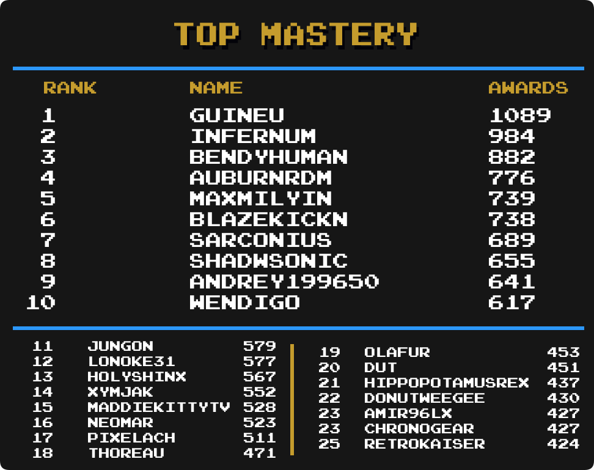
-
guineu remains in 1st with 1089 total mastery awards.
-
Jungon has moved up 1 spot and is in 11th place.
-
 Lonoke31 has moved up 2 spots and is in 12th place.
Lonoke31 has moved up 2 spots and is in 12th place. -
Olafur has moved up 1 spot and is in 19th place.
-
 donutweegee has moved up 1 spot and is in 22nd place.
donutweegee has moved up 1 spot and is in 22nd place. -
Amir96lx has made it into the top 25 and is tied for 23rd place.
-
 Retrokaiser has made it into the top 25 and is in 25th place.
Retrokaiser has made it into the top 25 and is in 25th place.
Total Awards (Excluding Hacks)
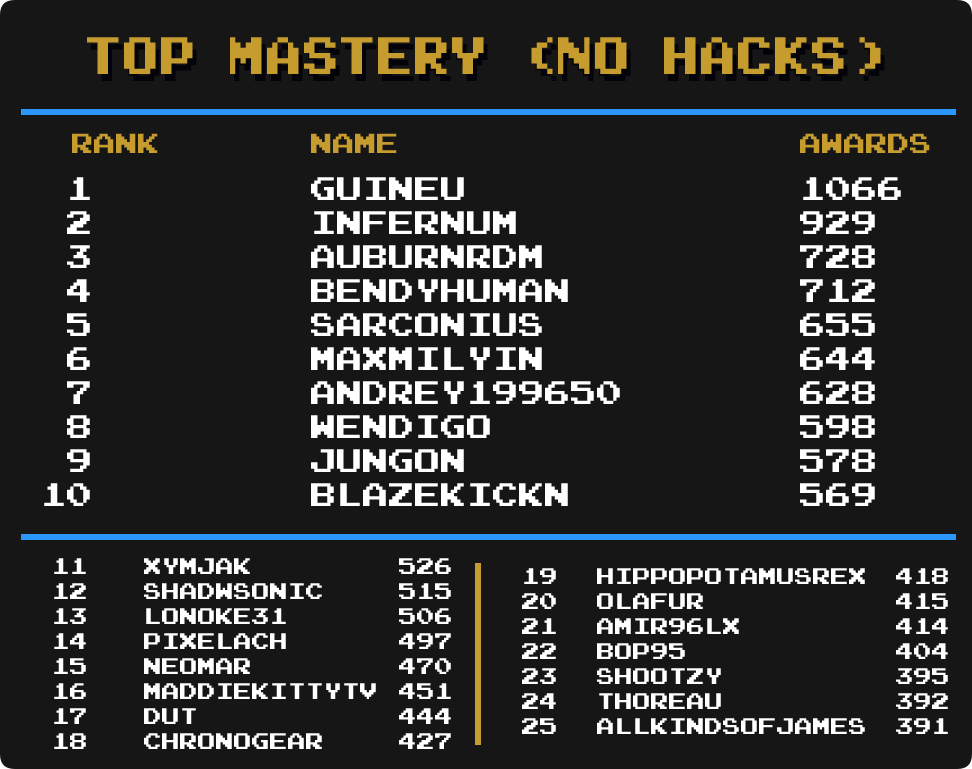
-
guineu remains in 1st with 1066 total mastery awards.
-
NEOMAR has moved up 1 spot and is in 15th place.
-
 MaddieKittyTV has moved up 1 spot and is in 16th place.
MaddieKittyTV has moved up 1 spot and is in 16th place. -
Amir96lx has made it into the top 25 and is in 21st place.
-
AllKindsOfJames has made it into the top 25 and is in 25th place.
Event Awards
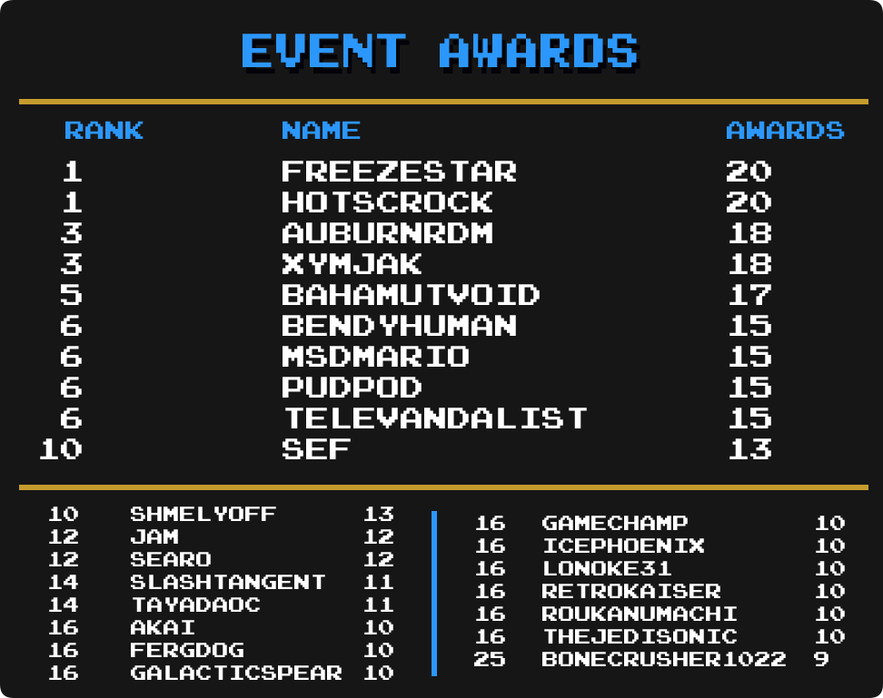
-
freezestar remains in 1st with 20 total mastery awards.
-
Sef has moved up 1 spot and is tied for 10th place.
-
 SlashTangent &
SlashTangent &  Tayadaoc have moved up 3 spots and are tied for 14th place.
Tayadaoc have moved up 3 spots and are tied for 14th place. -
 Akai has moved up 3 spots and is in a 9-way tie for 16th place.
Akai has moved up 3 spots and is in a 9-way tie for 16th place. -
 GalacticSpear & Lonoke31 have moved up 4 spots and are in a 9-way tie for 16th place.
GalacticSpear & Lonoke31 have moved up 4 spots and are in a 9-way tie for 16th place. -
Retrokaiser, roukanumachi &
 TheJediSonic have made it into the top 25 and are in a 9-way tie for 16th place.
TheJediSonic have made it into the top 25 and are in a 9-way tie for 16th place. -
bonecrusher1022 has made it into the top 25 and is in a 8-way tie for 25th place.
Site Awards
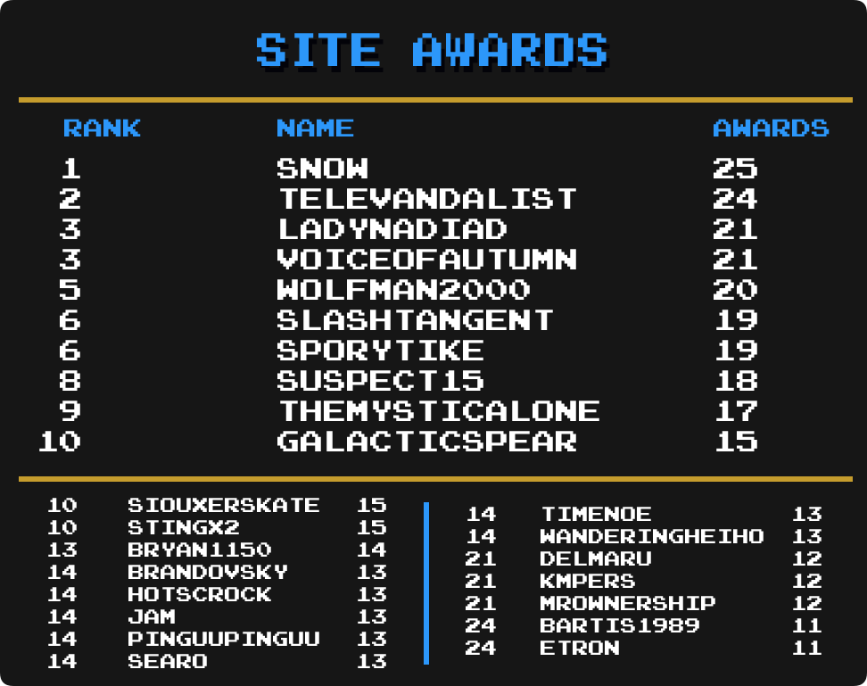
-
Snow remains in 1st with 25 total mastery awards.
-
 ladynadiad has moved up 1 spot and is tied for 3rd place.
ladynadiad has moved up 1 spot and is tied for 3rd place. -
 suspect15 has moved up 3 spots and is in 8th place.
suspect15 has moved up 3 spots and is in 8th place. -
 Bryan1150 has moved up 6 spots and is in 13th place.
Bryan1150 has moved up 6 spots and is in 13th place. -
 Brandovsky &
Brandovsky &  timenoe have moved up 4 spots and are in a 7-way tie for 14th place.
timenoe have moved up 4 spots and are in a 7-way tie for 14th place.
Amstrad CPC
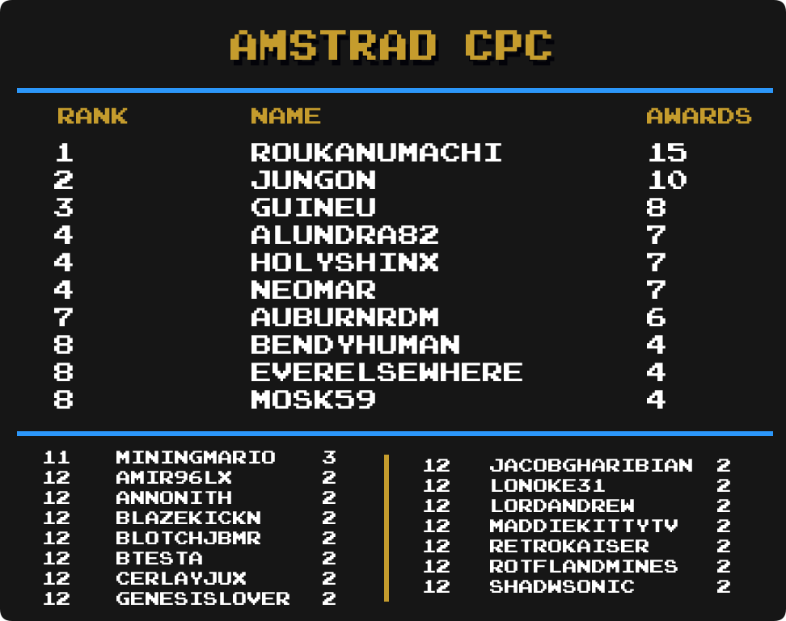
-
roukanumachi remains in 1st with 15 total mastery awards.
-
 EverElsewhere has moved up 1 spot and is in a 3-way tie for 8th place.
EverElsewhere has moved up 1 spot and is in a 3-way tie for 8th place. -
Amir96lx &
 Cerlayjux have made it into the top 25 and are in a 18-way tie for 12th place.
Cerlayjux have made it into the top 25 and are in a 18-way tie for 12th place.
Apple II
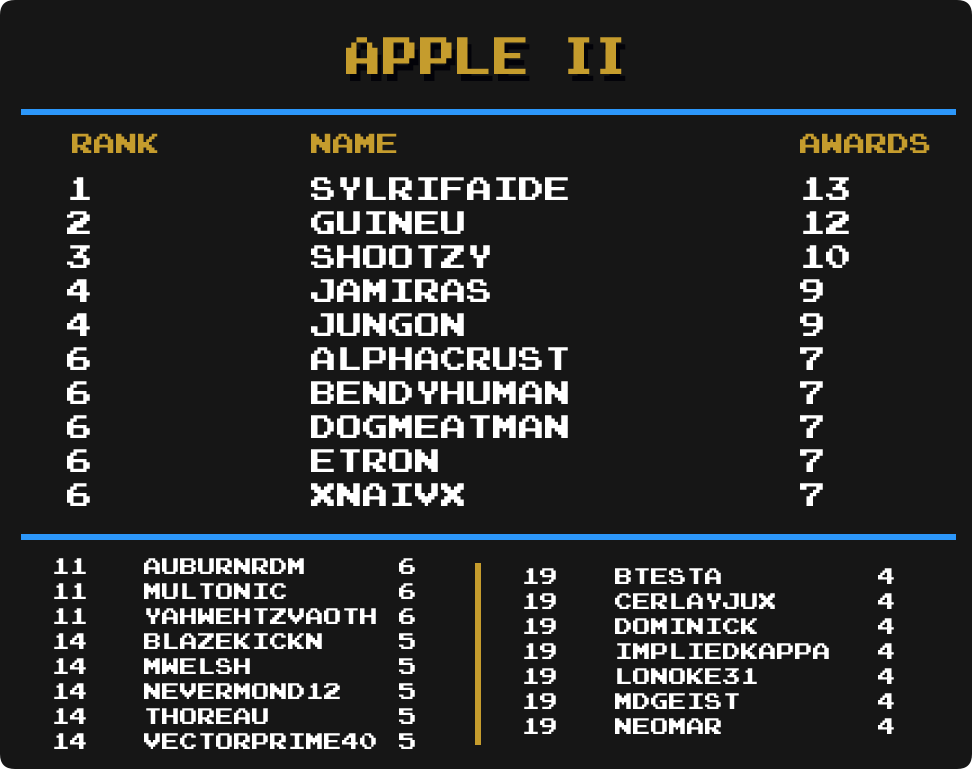
-
Sylrifaide has taken 1st place with 13 total mastery awards.
-
 Jamiras has moved up 8 spots and is tied for 4th place.
Jamiras has moved up 8 spots and is tied for 4th place. -
 Bendyhuman has moved up 1 spot and is in a 5-way tie for 6th place.
Bendyhuman has moved up 1 spot and is in a 5-way tie for 6th place. -
 multonic has moved up 1 spot and is in a 3-way tie for 11th place.
multonic has moved up 1 spot and is in a 3-way tie for 11th place. -
 Blazekickn has moved up 4 spots and is in a 5-way tie for 14th place.
Blazekickn has moved up 4 spots and is in a 5-way tie for 14th place. -
Cerlayjux has moved up 5 spots and is in a 8-way tie for 19th place.
-
Lonoke31 & NEOMAR have made it into the top 25 and are in a 8-way tie for 19th place.
Arcade
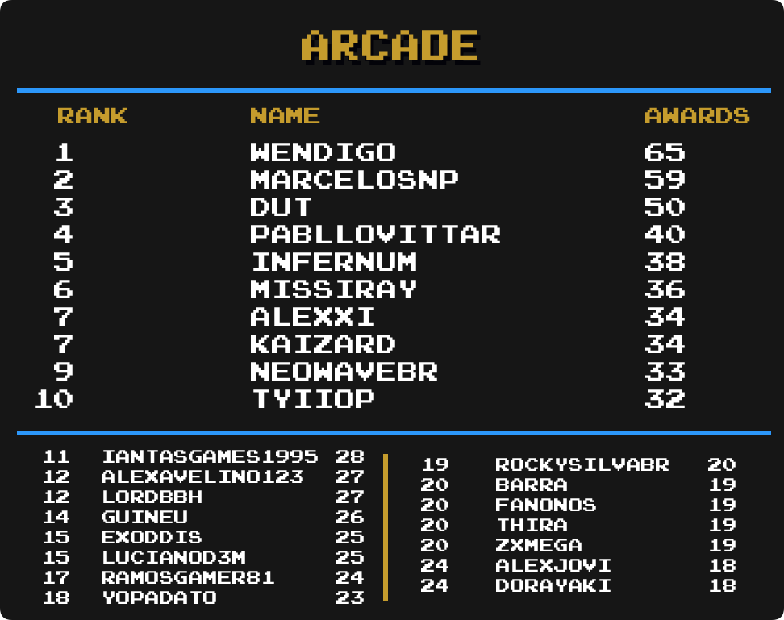
-
Wendigo remains in 1st with 65 total mastery awards.
-
 LordBBH has moved up 4 spots and is tied for 12th place.
LordBBH has moved up 4 spots and is tied for 12th place. -
 yopadato has made it into the top 25 and is in 18th place.
yopadato has made it into the top 25 and is in 18th place. -
 Barra has moved up 1 spot and is in a 4-way tie for 20th place.
Barra has moved up 1 spot and is in a 4-way tie for 20th place. -
 Fanonos has moved up 3 spots and is in a 4-way tie for 20th place.
Fanonos has moved up 3 spots and is in a 4-way tie for 20th place. -
 thira has made it into the top 25 and is in a 4-way tie for 20th place.
thira has made it into the top 25 and is in a 4-way tie for 20th place.
Arduboy
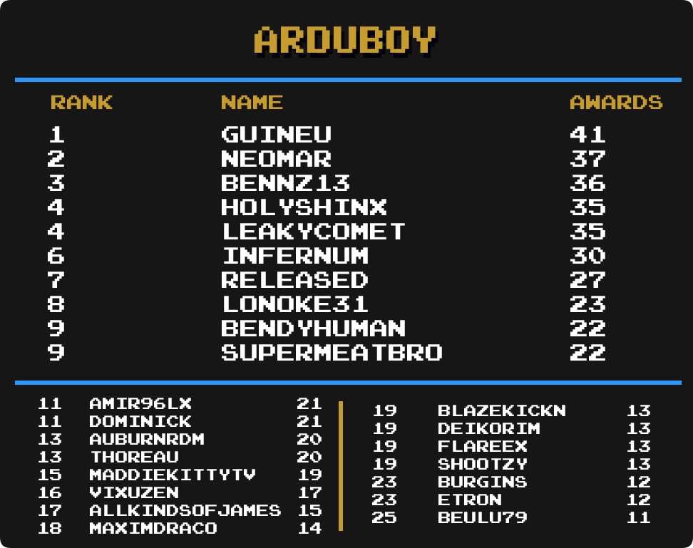
-
guineu remains in 1st with 41 total mastery awards.
-
 bennz13 has moved up 2 spots and is in 3rd place.
bennz13 has moved up 2 spots and is in 3rd place. -
Lonoke31 has moved up 3 spots and is in 8th place.
-
Amir96lx has moved up 4 spots and is tied for 11th place.
-
Maximdraco has moved up 1 spot and is in 18th place.
-
Blazekickn has moved up 2 spots and is in a 4-way tie for 19th place.
-
 Deikorim has moved up 4 spots and is in a 4-way tie for 19th place.
Deikorim has moved up 4 spots and is in a 4-way tie for 19th place. -
 Beulu79 has made it into the top 25 and is in a 4-way tie for 25th place.
Beulu79 has made it into the top 25 and is in a 4-way tie for 25th place.
Atari 2600
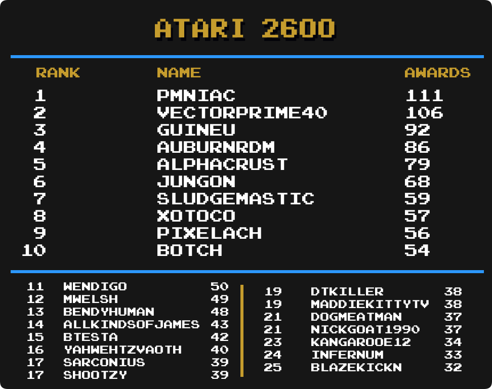
-
PMniac remains in 1st with 111 total mastery awards.
-
 sludgemastic has made it into the top 25 and is in 7th place.
sludgemastic has made it into the top 25 and is in 7th place. -
 Botch has moved up 6 spots and is in 10th place.
Botch has moved up 6 spots and is in 10th place. -
 Sarconius has moved up 2 spots and is tied for 17th place.
Sarconius has moved up 2 spots and is tied for 17th place.
Dreamcast
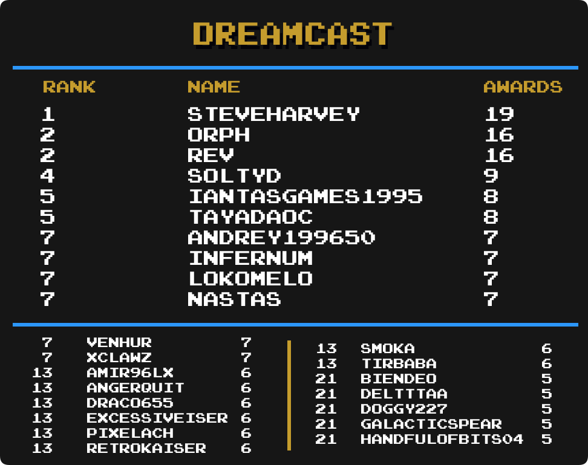
-
SteveHarvey remains in 1st with 19 total mastery awards.
-
Infernum has moved up 8 spots and is in a 6-way tie for 7th place.
-
Retrokaiser has made it into the top 25 and is in a 8-way tie for 13th place.
-
 Biendeo has moved up 4 spots and is in a 11-way tie for 21st place.
Biendeo has moved up 4 spots and is in a 11-way tie for 21st place. -
 Doggy227, GalacticSpear &
Doggy227, GalacticSpear &  handfulofbits04 have made it into the top 25 and are in a 11-way tie for 21st place.
handfulofbits04 have made it into the top 25 and are in a 11-way tie for 21st place.
Fairchild Channel F
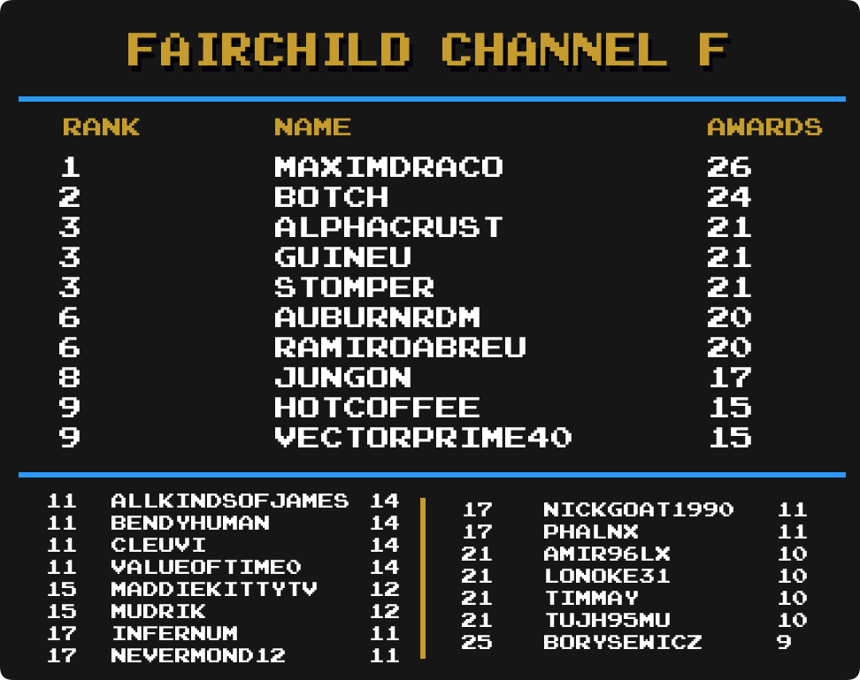
-
Maximdraco remains in 1st with 26 total mastery awards.
-
 ramiroabreu has made it into the top 25 and is tied for 6th place.
ramiroabreu has made it into the top 25 and is tied for 6th place. -
Jungon has moved up 2 spots and is in 8th place.
-
AllKindsOfJames has moved up 1 spot and is in a 4-way tie for 11th place.
-
Amir96lx has made it into the top 25 and is in a 4-way tie for 21st place.
-
Lonoke31 &
 Timmay have moved up 2 spots and are in a 4-way tie for 21st place.
Timmay have moved up 2 spots and are in a 4-way tie for 21st place.
Game Boy
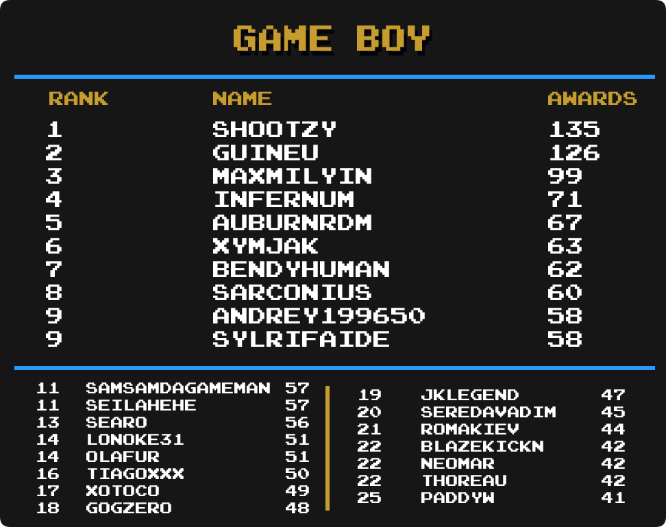
-
Shootzy remains in 1st with 135 total mastery awards.
-
 Andrey199650 has moved up 2 spots and is tied for 9th place.
Andrey199650 has moved up 2 spots and is tied for 9th place. -
 seilahehe has moved up 1 spot and is tied for 11th place.
seilahehe has moved up 1 spot and is tied for 11th place. -
Lonoke31 has moved up 4 spots and is tied for 14th place.
-
NEOMAR has made it into the top 25 and is in a 3-way tie for 22nd place.
Game Boy Advance
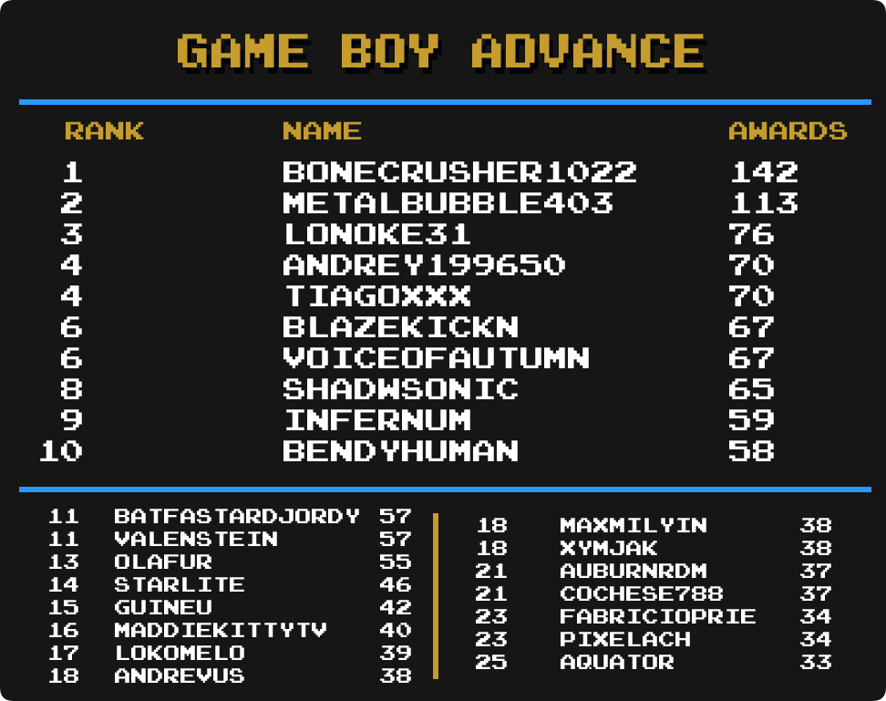
-
bonecrusher1022 remains in 1st with 142 total mastery awards.
-
 Tiagoxxx has moved up 1 spot and is tied for 4th place.
Tiagoxxx has moved up 1 spot and is tied for 4th place. -
Infernum has moved up 1 spot and is in 9th place.
-
 BatFastardJordy has moved up 1 spot and is tied for 11th place.
BatFastardJordy has moved up 1 spot and is tied for 11th place. -
Andrevus &
 Xymjak have moved up 1 spot and are in a 3-way tie for 18th place.
Xymjak have moved up 1 spot and are in a 3-way tie for 18th place. -
AuburnRDM has moved up 3 spots and is tied for 21st place.
-
 Pixelach has made it into the top 25 and is tied for 23rd place.
Pixelach has made it into the top 25 and is tied for 23rd place.
Game Boy Color
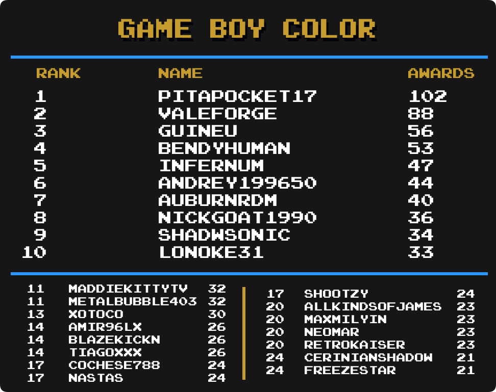
-
pitapocket17 remains in 1st with 102 total mastery awards.
-
Lonoke31 has moved up 1 spot and is in 10th place.
-
MaddieKittyTV has moved up 2 spots and is tied for 11th place.
-
Amir96lx has made it into the top 25 and is in a 3-way tie for 14th place.
-
Blazekickn has moved up 3 spots and is in a 3-way tie for 14th place.
-
AllKindsOfJames has moved up 2 spots and is in a 4-way tie for 20th place.
-
NEOMAR has made it into the top 25 and is in a 4-way tie for 20th place.
-
 CerinianShadowGaming has made it into the top 25 and is in a 5-way tie for 24th place.
CerinianShadowGaming has made it into the top 25 and is in a 5-way tie for 24th place.
Game Gear
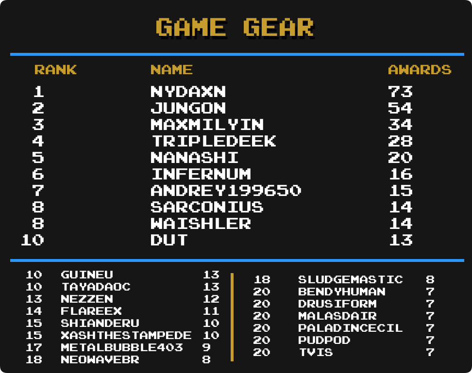
-
Nydaxn remains in 1st with 73 total mastery awards.
-
Sarconius has moved up 2 spots and is tied for 8th place.
-
guineu has moved up 1 spot and is in a 3-way tie for 10th place.
-
 NeowaveBR has moved up 3 spots and is tied for 18th place.
NeowaveBR has moved up 3 spots and is tied for 18th place. -
sludgemastic has moved up 5 spots and is tied for 18th place.
Hack Champ
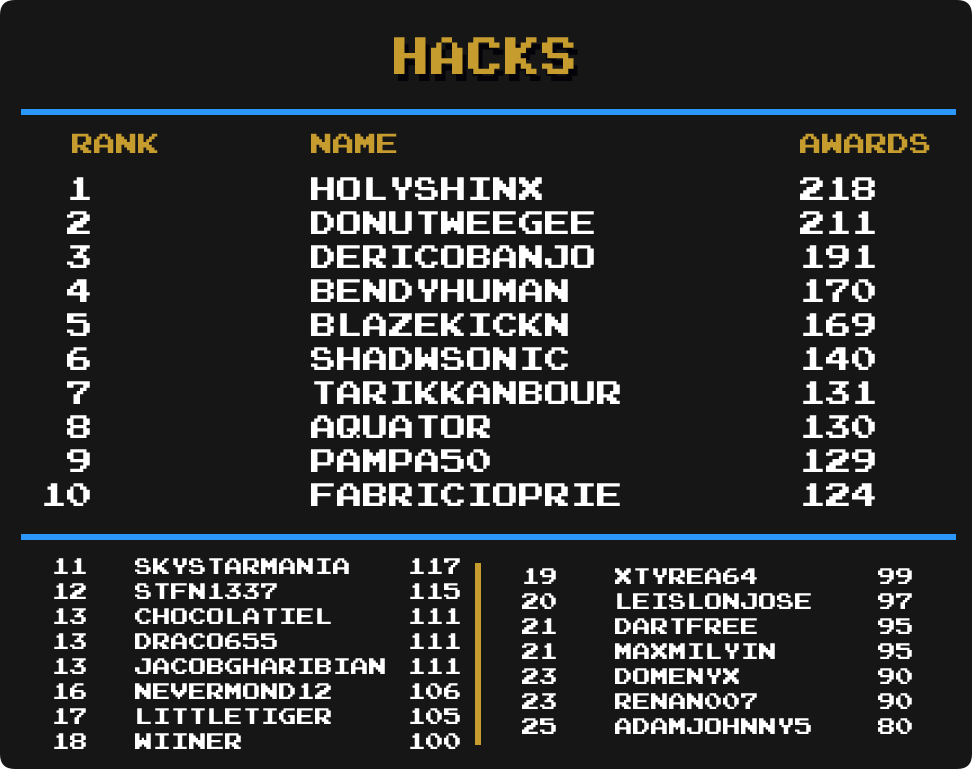
-
HolyShinx remains in 1st with 218 total mastery awards.
-
 Tarikkanbour has moved up 2 spots and is in 7th place.
Tarikkanbour has moved up 2 spots and is in 7th place. -
 Pampa50 has moved up 1 spot and is in 9th place.
Pampa50 has moved up 1 spot and is in 9th place. -
 Skystarmania has moved up 1 spot and is in 11th place.
Skystarmania has moved up 1 spot and is in 11th place. -
 chocolatiel has moved up 1 spot and is in a 3-way tie for 13th place.
chocolatiel has moved up 1 spot and is in a 3-way tie for 13th place. -
 Nevermond12 has moved up 1 spot and is in 16th place.
Nevermond12 has moved up 1 spot and is in 16th place. -
 xTyrea64 has moved up 3 spots and is in 19th place.
xTyrea64 has moved up 3 spots and is in 19th place. -
 adamjohnny5 has made it into the top 25 and is in 25th place.
adamjohnny5 has made it into the top 25 and is in 25th place.
Homebrew Champ
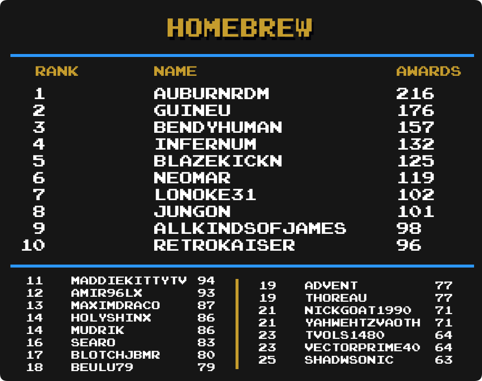
-
AuburnRDM remains in 1st with 216 total mastery awards.
-
Lonoke31 has moved up 1 spot and is in 7th place.
-
Retrokaiser has moved up 2 spots and is in 10th place.
-
Amir96lx has moved up 7 spots and is in 12th place.
-
 mudrik has moved up 1 spot and is tied for 14th place.
mudrik has moved up 1 spot and is tied for 14th place. -
 Advent has moved up 3 spots and is tied for 19th place.
Advent has moved up 3 spots and is tied for 19th place. -
Tvols1480 has made it into the top 25 and is tied for 23rd place.
Master System
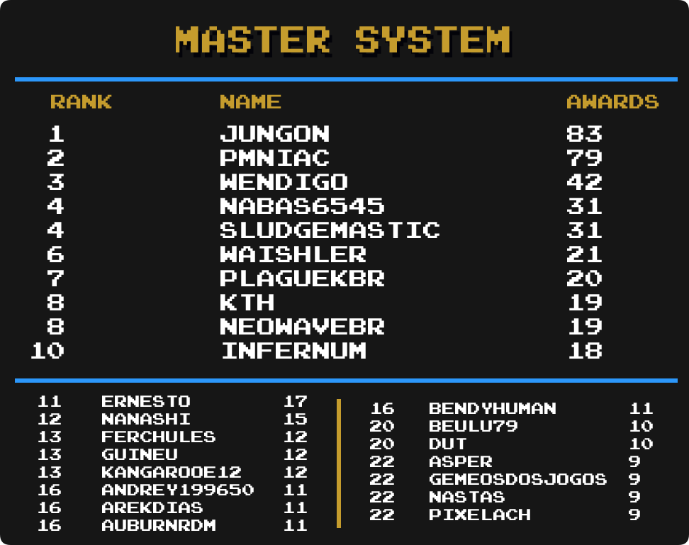
-
Jungon remains in 1st with 83 total mastery awards.
-
Waishler has moved up 12 spots and is in 6th place.
Mega Drive
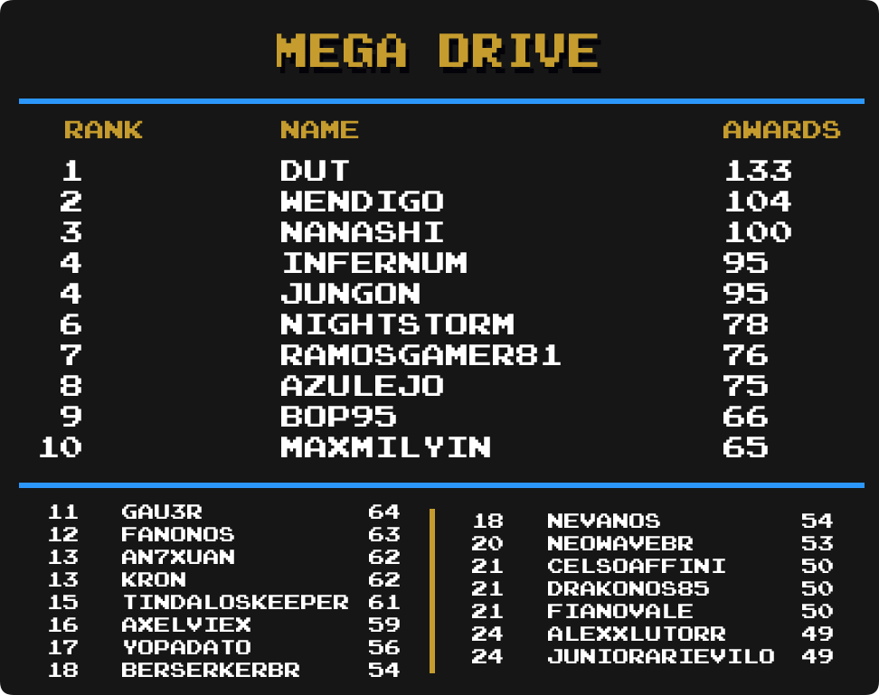
-
DUT remains in 1st with 133 total mastery awards.
-
 ramosgamer81 has moved up 1 spot and is in 7th place.
ramosgamer81 has moved up 1 spot and is in 7th place. -
Fanonos has moved up 1 spot and is in 12th place.
-
Nevanos has moved up 1 spot and is tied for 18th place.
Mega Duck
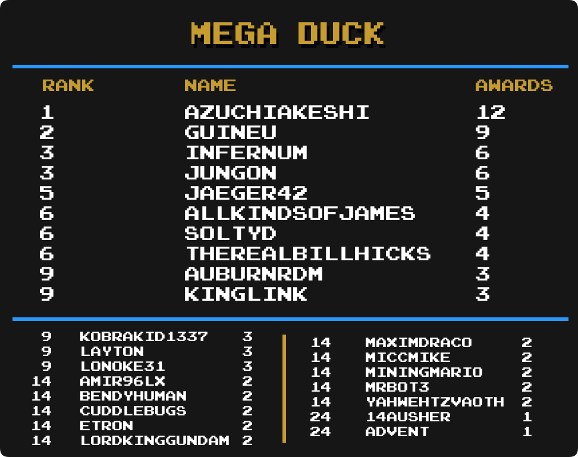
-
AzuchiAkeshi remains in 1st with 12 total mastery awards.
-
Jungon has moved up 1 spot and is tied for 3rd place.
-
AllKindsOfJames has moved up 18 spots and is in a 3-way tie for 6th place.
-
Advent has made it into the top 25 and is in a 67-way tie for 24th place.
Nintendo 64
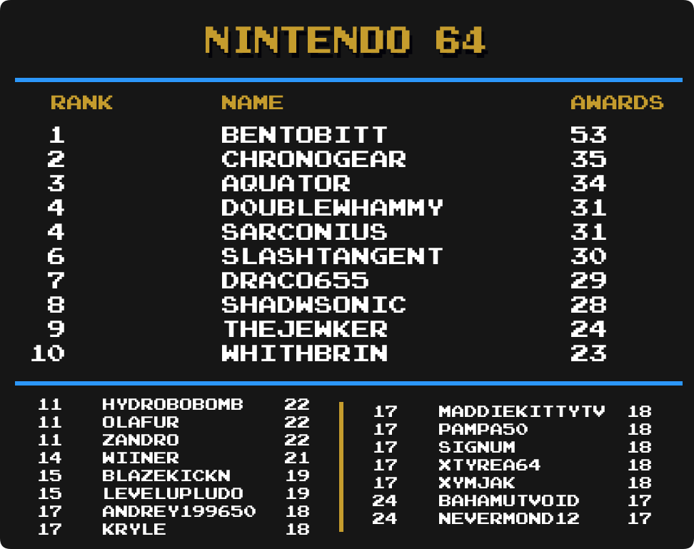
-
BenTobitt remains in 1st with 53 total mastery awards.
-
 D0ubleWhammy has moved up 4 spots and is tied for 4th place.
D0ubleWhammy has moved up 4 spots and is tied for 4th place. -
 Whithbrin has moved up 3 spots and is in 10th place.
Whithbrin has moved up 3 spots and is in 10th place. -
 HydroBobOmb has moved up 1 spot and is in a 3-way tie for 11th place.
HydroBobOmb has moved up 1 spot and is in a 3-way tie for 11th place. -
Pampa50 has moved up 3 spots and is in a 7-way tie for 17th place.
-
xTyrea64 has made it into the top 25 and is in a 7-way tie for 17th place.
NES
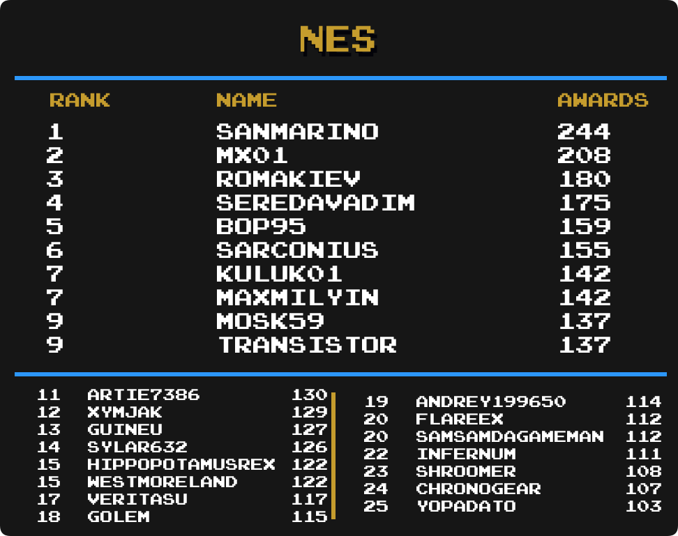
-
SanMarino remains in 1st with 244 total mastery awards.
-
Mosk59 has moved up 1 spot and is tied for 9th place.
-
 HippopotamusRex has moved up 1 spot and is tied for 15th place.
HippopotamusRex has moved up 1 spot and is tied for 15th place. -
 Shroomer has moved up 1 spot and is in 23rd place.
Shroomer has moved up 1 spot and is in 23rd place.
Nintendo DS
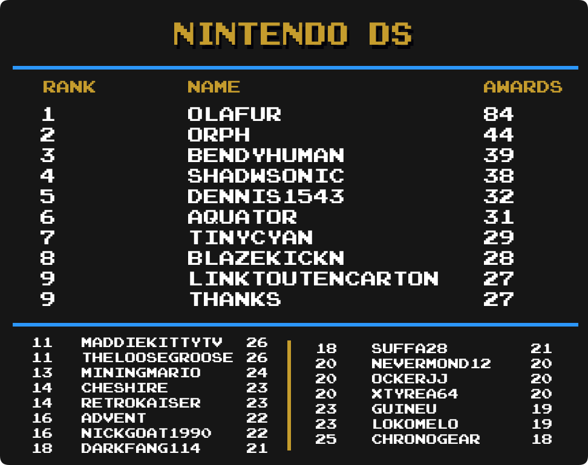
-
Olafur remains in 1st with 84 total mastery awards.
-
Orph has moved up 1 spot and is in 2nd place.
-
 TheLooseGroose has moved up 1 spot and is tied for 11th place.
TheLooseGroose has moved up 1 spot and is tied for 11th place. -
Advent has moved up 2 spots and is tied for 16th place.
-
 Darkfang114 has made it into the top 25 and is tied for 18th place.
Darkfang114 has made it into the top 25 and is tied for 18th place.
Nintendo DSi
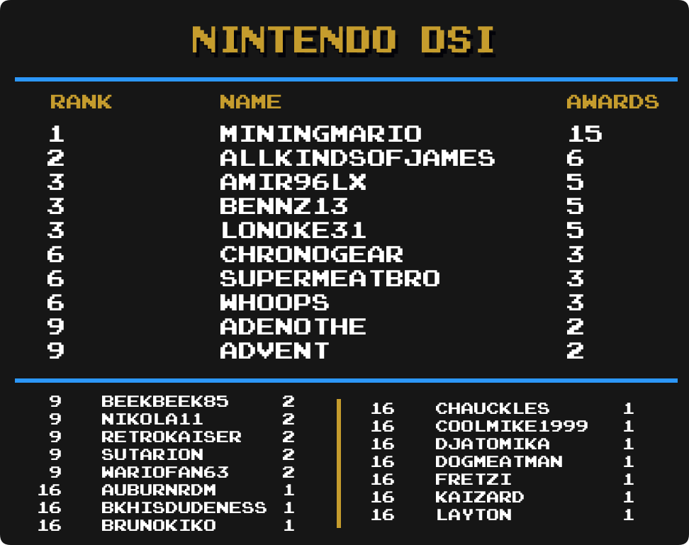
-
MiningMario has taken 1st place with 15 total mastery awards.
-
AllKindsOfJames has made it into the top 25 and is in 2nd place.
PC Engine
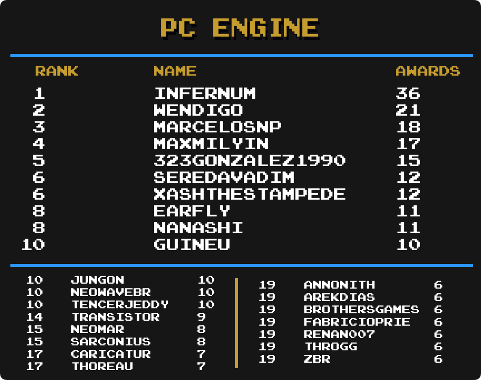
-
Infernum remains in 1st with 36 total mastery awards.
-
NeowaveBR has moved up 1 spot and is in a 4-way tie for 10th place.
-
 Throgg has made it into the top 25 and is in a 7-way tie for 19th place.
Throgg has made it into the top 25 and is in a 7-way tie for 19th place.
PC Engine CD

-
Annonith remains in 1st with 10 total mastery awards.
PC-8000/8800
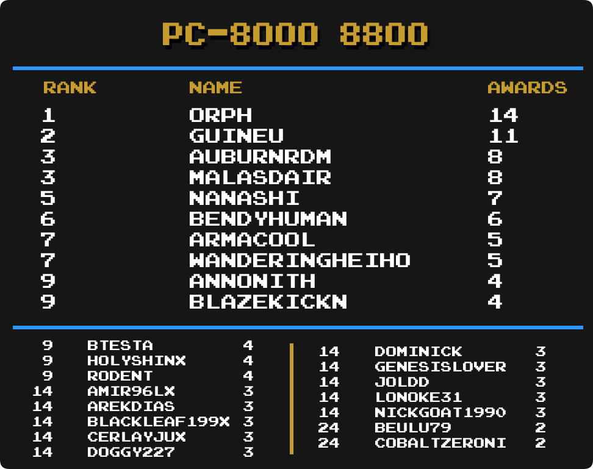
-
Orph remains in 1st with 14 total mastery awards.
-
Nanashi has moved up 1 spot and is in 5th place.
-
Blazekickn has moved up 6 spots and is in a 5-way tie for 9th place.
-
Cerlayjux has moved up 6 spots and is in a 10-way tie for 14th place.
-
Doggy227 has made it into the top 25 and is in a 10-way tie for 14th place.
PlayStation
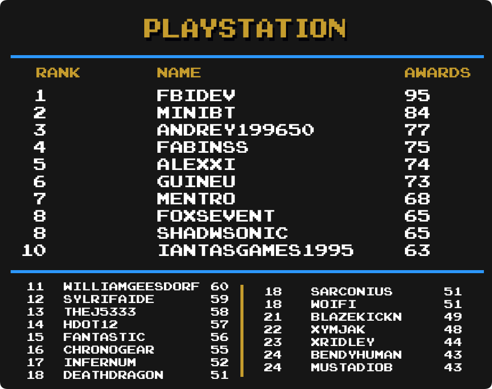
-
FBiDev remains in 1st with 95 total mastery awards.
-
 foxsevent has moved up 2 spots and is tied for 8th place.
foxsevent has moved up 2 spots and is tied for 8th place. -
Sylrifaide has moved up 2 spots and is in 12th place.
-
 Fantastic has moved up 1 spot and is in 15th place.
Fantastic has moved up 1 spot and is in 15th place. -
Infernum has moved up 2 spots and is in 17th place.
-
Sarconius has moved up 1 spot and is in a 3-way tie for 18th place.
-
 MustadioB has made it into the top 25 and is tied for 24th place.
MustadioB has made it into the top 25 and is tied for 24th place.
PlayStation 2
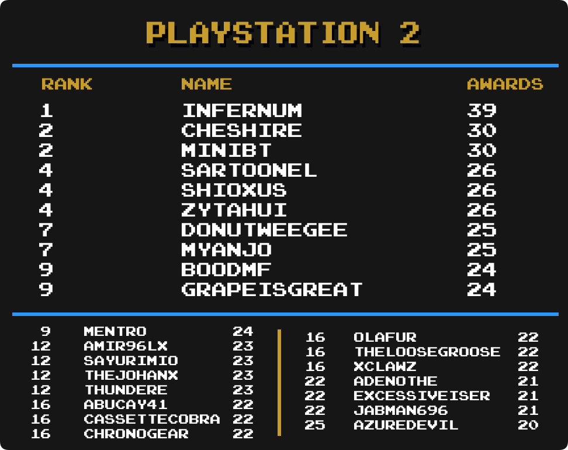
-
Infernum remains in 1st with 39 total mastery awards.
-
 Cheshire has moved up 1 spot and is tied for 2nd place.
Cheshire has moved up 1 spot and is tied for 2nd place. -
 Sartoonel has moved up 2 spots and is in a 3-way tie for 4th place.
Sartoonel has moved up 2 spots and is in a 3-way tie for 4th place. -
 Zytahui has moved up 4 spots and is in a 3-way tie for 4th place.
Zytahui has moved up 4 spots and is in a 3-way tie for 4th place. -
 boodmf &
boodmf &  grapeisgreat have moved up 6 spots and are in a 3-way tie for 9th place.
grapeisgreat have moved up 6 spots and are in a 3-way tie for 9th place. -
 Mentro has moved up 2 spots and is in a 3-way tie for 9th place.
Mentro has moved up 2 spots and is in a 3-way tie for 9th place. -
Amir96lx has moved up 2 spots and is in a 4-way tie for 12th place.
-
 thundere has moved up 8 spots and is in a 4-way tie for 12th place.
thundere has moved up 8 spots and is in a 4-way tie for 12th place. -
Olafur has moved up 1 spot and is in a 6-way tie for 16th place.
-
 Abucay41 & TheLooseGroose have made it into the top 25 and are in a 6-way tie for 16th place.
Abucay41 & TheLooseGroose have made it into the top 25 and are in a 6-way tie for 16th place. -
Excessiveiser has moved up 1 spot and is in a 3-way tie for 22nd place.
-
 AzureDevil has made it into the top 25 and is in a 5-way tie for 25th place.
AzureDevil has made it into the top 25 and is in a 5-way tie for 25th place.
PlayStation Portable
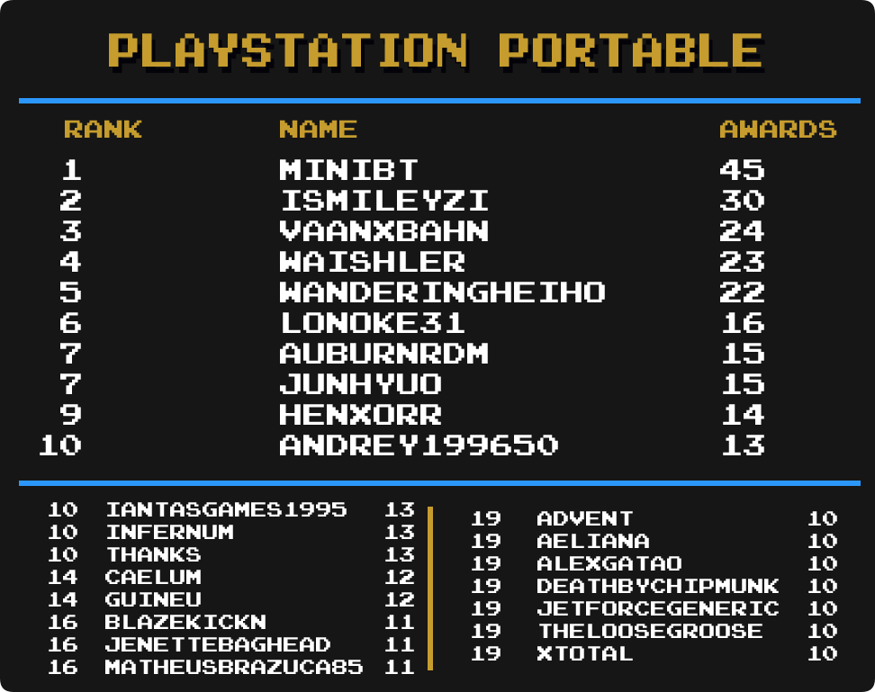
-
minibt remains in 1st with 45 total mastery awards.
-
Infernum has moved up 3 spots and is in a 4-way tie for 10th place.
-
Advent has moved up 5 spots and is in a 7-way tie for 19th place.
-
 AlexGatao has made it into the top 25 and is in a 7-way tie for 19th place.
AlexGatao has made it into the top 25 and is in a 7-way tie for 19th place.
Pokémon Mini
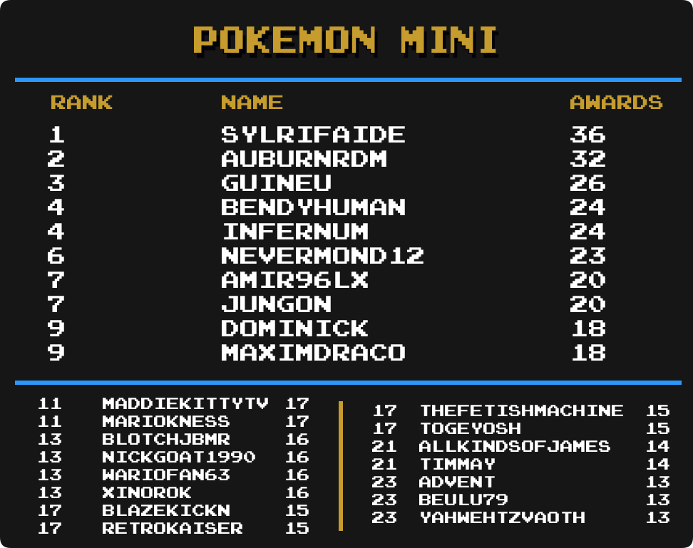
-
Sylrifaide remains in 1st with 36 total mastery awards.
-
Infernum has moved up 1 spot and is tied for 4th place.
-
Amir96lx has moved up 8 spots and is tied for 7th place.
-
MarioKness has made it into the top 25 and is tied for 11th place.
-
Blazekickn has moved up 2 spots and is in a 4-way tie for 17th place.
-
 Togeyosh has made it into the top 25 and is in a 4-way tie for 17th place.
Togeyosh has made it into the top 25 and is in a 4-way tie for 17th place. -
Timmay has moved up 3 spots and is tied for 21st place.
Sega Saturn
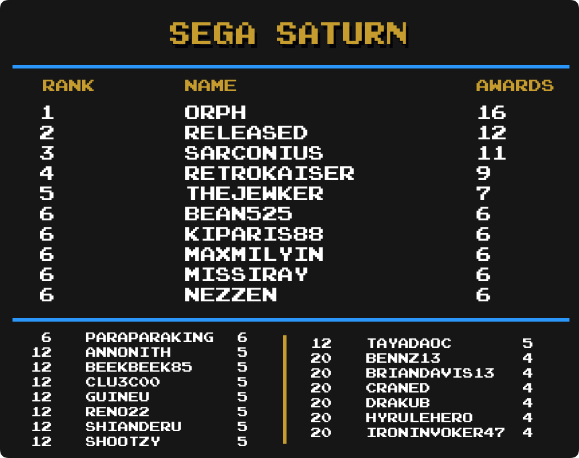
-
Orph remains in 1st with 16 total mastery awards.
-
 TheJewker has moved up 1 spot and is in 5th place.
TheJewker has moved up 1 spot and is in 5th place. -
 Bean525,
Bean525,  Kiparis88,
Kiparis88,  MaxMilyin &
MaxMilyin &  missiray have moved up 1 spot and are in a 6-way tie for 6th place.
missiray have moved up 1 spot and are in a 6-way tie for 6th place. -
 Clu3C00 has moved up 7 spots and is in a 8-way tie for 12th place.
Clu3C00 has moved up 7 spots and is in a 8-way tie for 12th place. -
 Hyrulehero has made it into the top 25 and is in a 13-way tie for 20th place.
Hyrulehero has made it into the top 25 and is in a 13-way tie for 20th place.
Sega CD
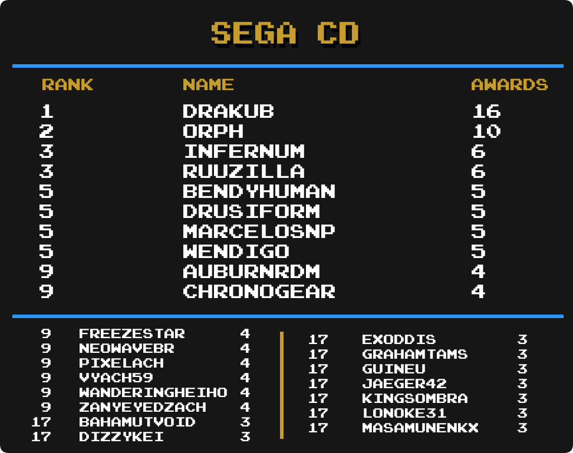
-
Drakub remains in 1st with 16 total mastery awards.
-
 ruuzilla has moved up 3 spots and is tied for 3rd place.
ruuzilla has moved up 3 spots and is tied for 3rd place. -
AuburnRDM has moved up 6 spots and is in a 8-way tie for 9th place.
-
Pixelach has made it into the top 25 and is in a 8-way tie for 9th place.
SNES
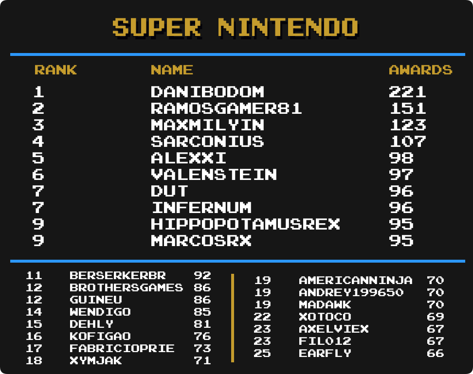
-
danibodom remains in 1st with 221 total mastery awards.
-
Valenstein has moved up 2 spots and is in 6th place.
-
Infernum has moved up 2 spots and is tied for 7th place.
-
 BrothersGames has moved up 4 spots and is tied for 12th place.
BrothersGames has moved up 4 spots and is tied for 12th place. -
Kofigao has moved up 1 spot and is in 16th place.
Virtual Boy
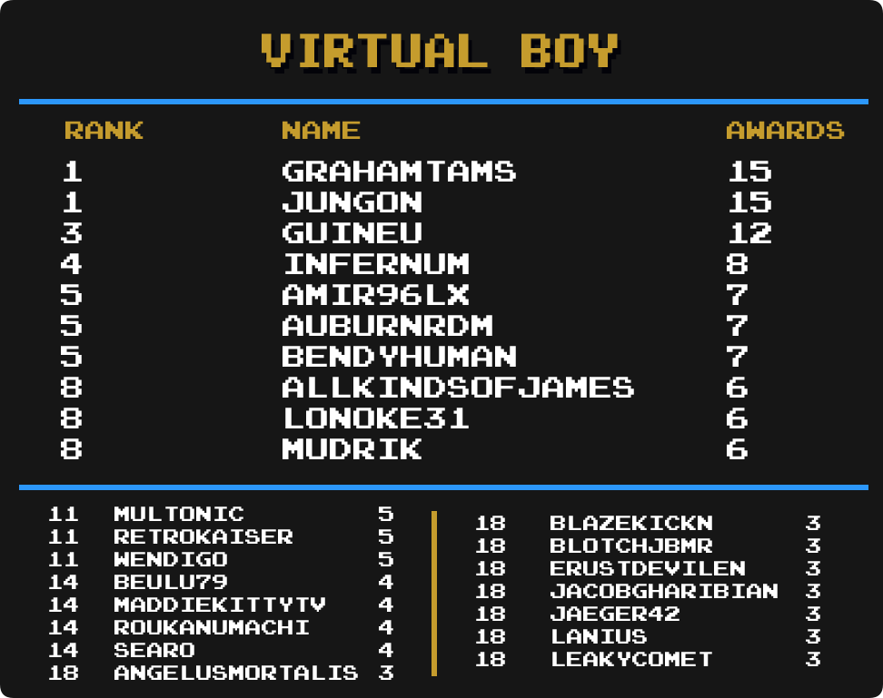
-
Grahamtams remains in 1st with 15 total mastery awards.
-
Amir96lx has moved up 4 spots and is in a 3-way tie for 5th place.
WASM-4
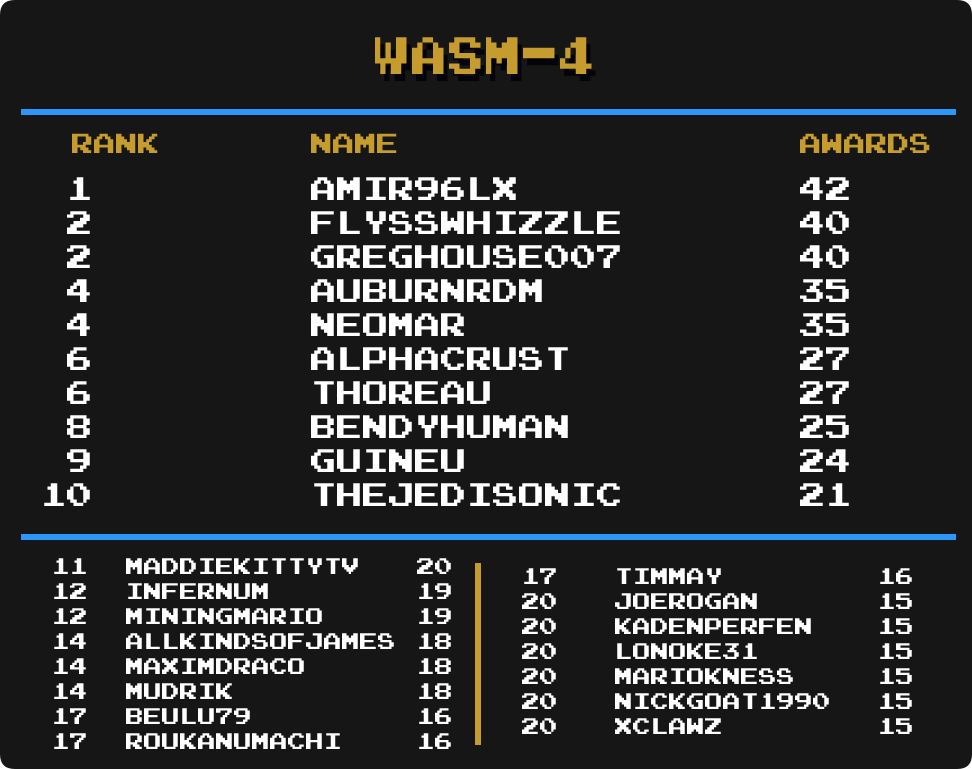
-
Amir96lx remains in 1st with 42 total mastery awards.
-
FlyssWhizzle has made it into the top 25 and is tied for 2nd place.
-
MiningMario has made it into the top 25 and is tied for 12th place.
-
Beulu79 has moved up 4 spots and is in a 3-way tie for 17th place.
-
MarioKness has made it into the top 25 and is in a 6-way tie for 20th place.
Watara Supervision
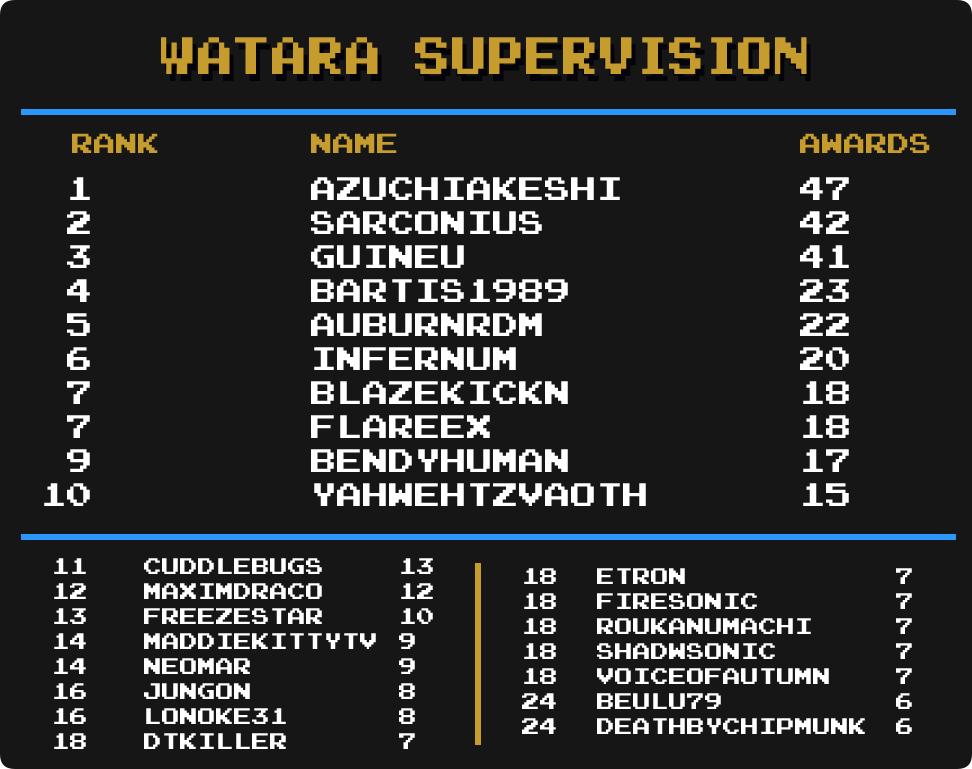
-
AzuchiAkeshi remains in 1st with 47 total mastery awards.
-
Blazekickn has moved up 1 spot and is tied for 7th place.
-
Jungon has made it into the top 25 and is tied for 16th place.
-
Lonoke31 has moved up 2 spots and is tied for 16th place.